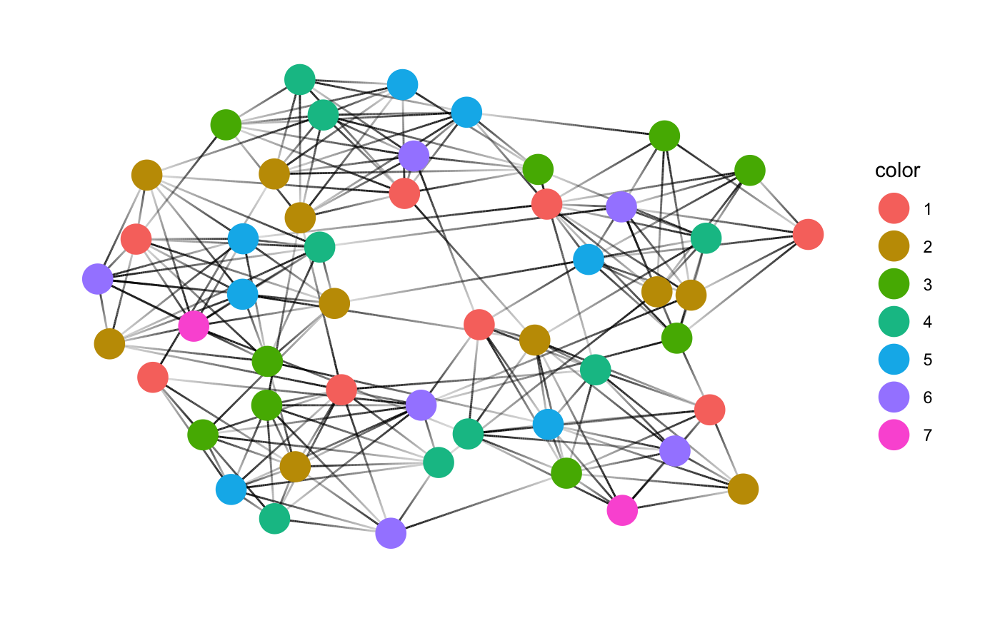

These functions are tidygraph wrapper around the various graph coloring algorithms.
They automatically use the graph that is being computed on, and
otherwise passes on its arguments to the relevant coloring function. The return value is always
a integer vector of assigned color index so that neighboring nodes never share the same color.
color_dsatur() color_msc() color_lmxrlf() color_hybrid_lmxrlf_tabucol() color_hybrid_dsatur_tabucol() color_tabucol(k)
| k | number of colors to use for graph coloring |
|---|
color_dsatur: Color graph using graph_coloring_dsatur()
color_msc: Color graph using graph_coloring_msc()
color_lmxrlf: Color graph using graph_coloring_lmxrlf()
WARNING Algorithm is unstable and requires additional testing
color_hybrid_lmxrlf_tabucol: Color graph using graph_coloring_hybrid_lmxrlf_tabucol()
WARNING Algorithm is unstable and requires additional testing
color_hybrid_dsatur_tabucol: Color graph using graph_coloring_hybrid_dsatur_tabucol()
color_tabucol: Color graph using graph_coloring_tabucol()
library(tidygraph)#> #>#> #> #>#> #> #>if (requireNamespace("ggraph", quietly = TRUE)) { library(ggraph) set.seed(42) play_islands(5, 10, 0.8, 3) %>% mutate(color = as.factor(color_dsatur())) %>% ggraph(layout = 'kk') + geom_edge_link(aes(alpha = ..index..), show.legend = FALSE) + geom_node_point(aes(color = color), size = 7) + theme_graph("") }#>#> #>